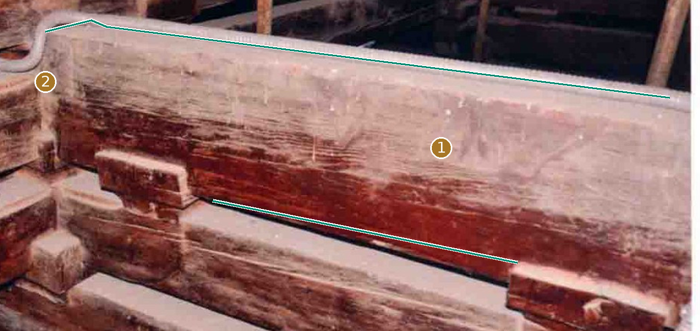
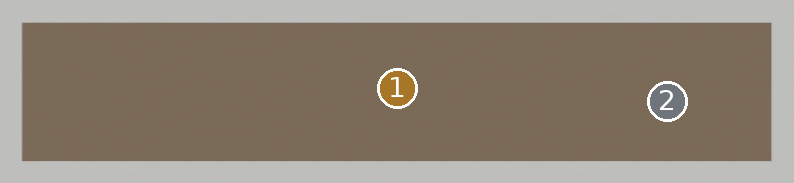
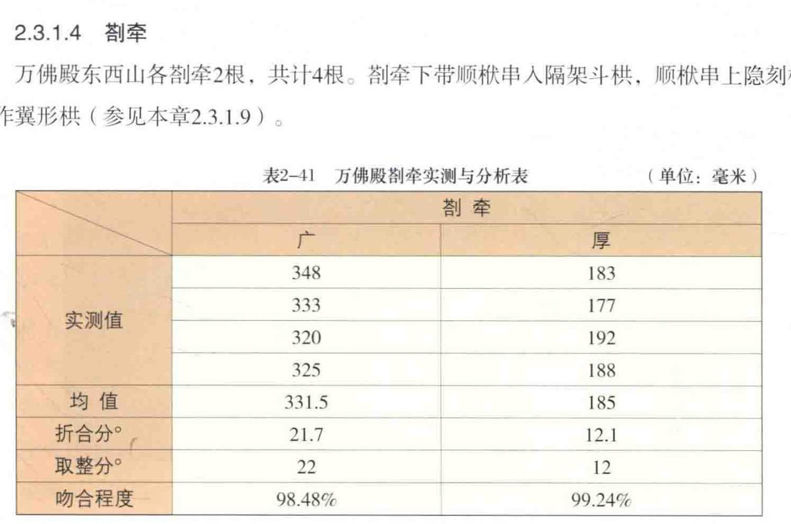
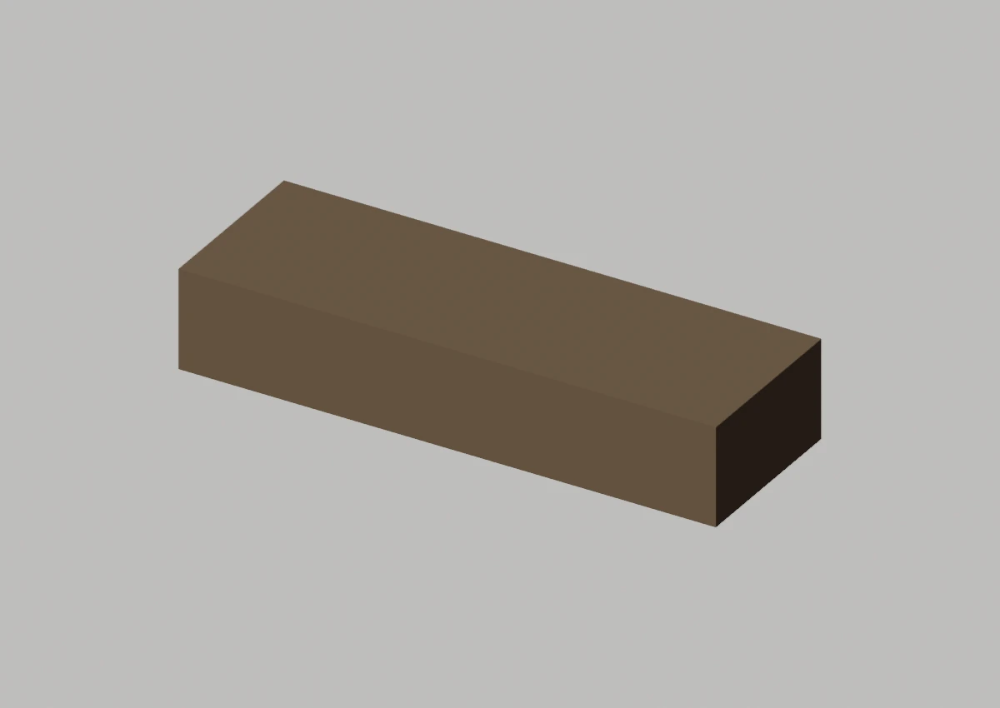
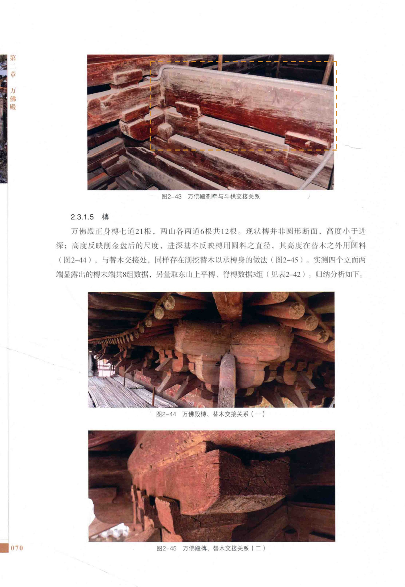

Master仍是直棱包络
先看形，再看差异


顺栿串、隐刻及后尾不能由本裁切补全
定性对照：两侧未做比例归一或像素叠加。绿色只描原图可辨线段，推算图线仍属推断；橙色虚框只表示原图查找范围。
02 / 形态细节
其他角度、截面与现有局部版本



03 / 原图与位置
目标在原始资料的哪里


安装位置与复用
东山 / 具体端点待附图锁定；西山 / 具体端点待附图锁定；正身体系 / 待定位
变体：沿用现行登记口径
Master：CMP-FRAME-ZHAQIAN-001_MASTER
对应实例范围（14条登记记录，不是物理件数）
- 剳牵-东山-01 · 东山 / 具体端点待附图锁定
- 剳牵-东山-02 · 东山 / 具体端点待附图锁定
- 剳牵-西山-01 · 西山 / 具体端点待附图锁定
- 剳牵-西山-02 · 西山 / 具体端点待附图锁定
- 剳牵-正身待定位-01 · 正身体系 / 待定位
- 剳牵-正身待定位-02 · 正身体系 / 待定位
- 剳牵-正身待定位-03 · 正身体系 / 待定位
- 剳牵-正身待定位-04 · 正身体系 / 待定位
- 剳牵-正身待定位-05 · 正身体系 / 待定位
- 剳牵-正身待定位-06 · 正身体系 / 待定位
- 剳牵-正身待定位-07 · 正身体系 / 待定位
- 剳牵-正身待定位-08 · 正身体系 / 待定位
- 剳牵-正身待定位-09 · 正身体系 / 待定位
- 剳牵-正身待定位-10 · 正身体系 / 待定位
04 / 证据与边界
出处、模型身份与未知部分
仍然未知：按图名定位交接组合；不据此确定整根剳牵的完整历史形状。
原工程记录（按原文保留）：已知构件族及山面位置；其余位置和端点仍有缺口。直棱参考长度不证明全殿各件轮廓。
资料出处
A1 · PDF第85页 / 印刷第70页 · 归档原图 A1-p085.jpg
A1 · PDF第84页 / 印刷第69页 · 归档原图 A1-p084.jpg


模型原始渲染、网格身份与批准范围
现有 BLEND · axon 云端只读渲染；原始二进制与网格/变换未改。

现有 BLEND · front 云端只读渲染；原始二进制与网格/变换未改。

现有 BLEND · side 云端只读渲染；原始二进制与网格/变换未改。

A1、A2、A3共享测绘数据脉络，不作为三次独立复测。官方展示只作形态参考；推断、遮挡与未知不升级为实测事实。